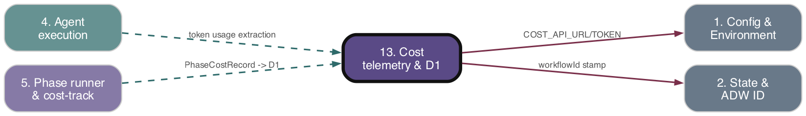

Subsystem 13 of 16
Cost telemetry & D1
As-is reference. Ground truth: source code.

Purpose
The cost engine (adws/cost/) computes, formats, and persists the monetary/token cost of each ADW phase. It extracts Anthropic token usage from Claude CLI JSONL output, prices it against per-model pricing tables, detects divergence between locally-computed and CLI-reported cost, renders GitHub-comment cost tables in multiple currencies, and dual-writes per-phase/per-model PhaseCostRecord rows to a Cloudflare D1-backed Cost API Worker (workers/cost-api/). It is provider-pluggable in shape (anthropic is the only provider implemented).
Responsibilities
- Define
PhaseCostRecord(one record per model per phase) and convert orchestrator-supplied legacy usage maps into them (createPhaseCostRecords). - Stream-parse Claude CLI JSONL stdout, accumulating per-turn estimates and capturing finalized per-model actuals + CLI-reported total cost (
AnthropicTokenUsageExtractor). - Hold Anthropic per-token pricing tables (opus/sonnet/haiku) and compute cost = Σ(usage[k] × pricing[k]) (
computeCost,pricing.ts). - Detect divergence between computed and CLI-reported cost beyond a 5% threshold (
checkDivergence). - Fetch live multi-currency exchange rates with retry/timeout/fallback (
exchangeRates.ts). - Render markdown cost tables, currency totals, divergence warnings, estimate-vs-actual tables, and a legacy
CostBreakdownmarkdown table (reporting/,costHelpers.ts). - POST records to the Cost API Worker, transforming camelCase → snake_case; failures are swallowed (
d1Client.ts). - Worker side: authenticate Bearer token, validate ingest payload, auto-resolve project slug, batch-insert
cost_records+token_usagerows, and serve read aggregation endpoints.
Key Files
| Path | Role |
|---|---|
| --- | --- |
adws/cost/types.ts |
PhaseCostRecord, TokenUsageMap/PricingMap/ModelUsageMap, legacy LegacyModelUsage*/CostBreakdown, PhaseCostStatus, DivergenceResult, TokenUsageExtractor iface, createPhaseCostRecords |
| --- | --- |
adws/cost/computation.ts |
computeCost, checkDivergence (5% default threshold) |
| --- | --- |
adws/cost/providers/anthropic/extractor.ts |
AnthropicTokenUsageExtractor — JSONL parse, per-turn estimate + finalized actuals |
| --- | --- |
adws/cost/providers/anthropic/pricing.ts |
Per-token opus/sonnet/haiku tables, getAnthropicPricing (sonnet fallback) |
| --- | --- |
adws/cost/exchangeRates.ts |
fetchExchangeRates (open.er-api.com), currency symbols, fallback rates |
| --- | --- |
adws/cost/costHelpers.ts |
Legacy merge/total helpers, buildCostBreakdown, formatCostBreakdownMarkdown, persistTokenCounts, token-budget helpers (computePrimaryModelTokens etc.) |
| --- | --- |
adws/cost/reporting/commentFormatter.ts |
formatCostTable, formatDivergenceWarning, formatEstimateVsActual, formatCurrencyTotals, formatCostCommentSection |
| --- | --- |
adws/cost/d1Client.ts |
transformToIngestPayload, postCostRecordsToD1 (HTTP dual-write) |
| --- | --- |
adws/cost/index.ts |
Barrel; renames legacy types (ModelUsage/ModelUsageMap) for backward compat |
| --- | --- |
workers/cost-api/src/{index,auth,ingest,queries,cors,types}.ts |
Cloudflare Worker: router, Bearer auth, ingest, read APIs |
| --- | --- |
workers/cost-api/src/schema.sql, migrations/0001_initial.sql |
D1 schema: projects, cost_records, token_usage |
| --- | --- |
workers/cost-api/wrangler.toml |
Worker config: route costs.paysdoc.nl/*, EU-jurisdiction D1 adw-costs, secrets-store COST_API_TOKEN |
| --- | --- |
adws/cost/__tests__/, workers/cost-api/test/ |
Vitest unit tests |
Behavior & Flows
- Extraction (during phase): the phase runner feeds CLI stdout chunks to
AnthropicTokenUsageExtractor.onChunk. The extractor line-buffers, parses each JSON line, and: -assistantmessages: accumulate accurateinput_tokens/cache_creation_input_tokens/cache_read_input_tokensper model, plus an estimatedoutputfrom text content (~4 chars/token); dedupes bymessage.id; falls back to amodelHintthen'unknown'for the model key. -resultmessage: snapshots the pre-finalization estimate, recordstotal_cost_usdasreportedCostUsd, replaces per-model usage with the actualmodelUsage(camelCase→snake_case viatoTokenUsageMap), and marks finalized. - Record creation: each phase (
adws/phases/*.ts) callscreatePhaseCostRecordswith a legacyLegacyModelUsageMap(camelCase from orchestrators), producing onePhaseCostRecordper model. NOTE: currentlycomputedCostUsd === reportedCostUsd === usage.costUSD(the CLI cost is copied; localcomputeCostis not yet wired into record creation).estimatedTokens/actualTokensare setundefined. - Reporting:
formatCostCommentSection(gated onSHOW_COST_IN_COMMENTS) fetches rates for non-USDCOST_REPORT_CURRENCIES, builds a per-phase table, currency totals, a>5%divergence blockquote (checkDivergence), and an estimate-vs-actual table when populated, wrapped in a<details>block. - Dual-write:
phaseRunner.ts:84callspostCostRecordsToD1({ project: repoName, repoUrl, records }). The client skips silently ifCOST_API_URLis unset or records empty, transforms to snake_case (contextResetCount → continuation_count), and POSTsCOST_API_URL/api/costwithAuthorization: Bearer COST_API_TOKEN. All errors are caught andlog(..., 'warn')-ed — D1 failures never crash the workflow. - Worker ingest: validates payload,
resolveProjectdoesINSERT OR IGNORE+SELECTonprojects.slug(auto-create, concurrency-safe), batch-insertscost_records(RETURNING id), then a flattened batch oftoken_usagerows (one per token type). Returns201 {inserted}. - Worker reads:
GET /api/projects,/api/projects/:id/costs/breakdown(SUM by model+provider,COALESCE(reported, computed)),/api/projects/:id/costs/issues(two queries to avoid join fan-out; phases ordered plan→build→test→review→document). All routes Bearer-auth via constant-time compare; CORS viaALLOWED_ORIGINS. - Exchange rates:
fetchExchangeRateshitsopen.er-api.com/v6/latest/USD, 5s timeout, 2 retries (exponential backoff), cacheslastKnownRates, falls back to hardcodedFALLBACK_EUR_RATE = 0.92.
Data Structures
PhaseCostRecord:{workflowId, issueNumber, phase, model, provider:'anthropic', tokenUsage:{input,output,cache_read,cache_write}, computedCostUsd, reportedCostUsd?, status, retryCount, contextResetCount, durationMs, timestamp, estimatedTokens?, actualTokens?}.TokenUsageMap/PricingMap=Record<string,number>(snake_case keys).ModelUsageMap=Record<model, TokenUsageMap>.- Legacy
LegacyModelUsage(camelCase:inputTokens/outputTokens/cacheReadInputTokens/cacheCreationInputTokens/costUSD) →LegacyModelUsageMap;CostBreakdown(totalCostUsd,modelUsage,currencies[]). PhaseCostStatus=success | partial | failed.- D1 schema:
projects(id,slug UNIQUE,name,repo_url,created_at);cost_records(...,project_id FK, computed_cost_usd, reported_cost_usd, status, retry_count, continuation_count, duration_ms, migrated);token_usage(cost_record_id FK, token_type, count). IngestPayload/IngestRecord(snake_case) — Worker contract, supports amigratedflag for historical CSV backfill.
Public Interface
- Barrel
adws/cost/index.ts:createPhaseCostRecords,PhaseCostStatus,computeCost,checkDivergence,AnthropicTokenUsageExtractor,ANTHROPIC_PRICING/getAnthropicPricing,fetchExchangeRates/CURRENCY_SYMBOLS,postCostRecordsToD1, reporting formatters, legacy helpers (mergeModelUsageMaps,buildCostBreakdown,formatCostBreakdownMarkdown,persistTokenCounts,computeTotalTokens/computeDisplayTokens/computePrimaryModelTokens). - Worker HTTP:
POST /api/cost,GET /api/projects,GET /api/projects/:id/costs/{breakdown,issues}.
Dependencies
- Upstream (depends on):
- Config & Environment (1):
COST_API_URL,COST_API_TOKEN,SHOW_COST_IN_COMMENTS,COST_REPORT_CURRENCIES(core/environment.ts,core/config.ts). - State & ADW ID (2):
AgentStateManager.read/writeStateinpersistTokenCounts. core/utils.log.- External: ExchangeRate-API (
open.er-api.com); Worker depends on Cloudflare D1 + Secrets Store. - Downstream (depended on by):
- Phase runner & cost-tracking composition (5):
phaseRunner.tsdrives the extractor and callspostCostRecordsToD1. - Phases & orchestrators (7): every
adws/phases/*.tscallscreatePhaseCostRecords;buildPhaseusescomputeDisplayTokens/computePrimaryModelTokensfor token-budget limits.
Interactions
| Other subsystem | Direction | What is exchanged |
|---|---|---|
| --- | --- | --- |
| 1 Config & Environment | in | COST_API_URL/TOKEN, SHOW_COST_IN_COMMENTS, COST_REPORT_CURRENCIES |
| --- | --- | --- |
| 2 State & ADW ID | in/out | workflowId(adwId) on records; persistTokenCounts writes state.json metadata |
| --- | --- | --- |
| 4 Agent execution | in | raw Claude CLI JSONL stdout chunks fed to the extractor |
| --- | --- | --- |
| 5 Phase runner & cost composition | out | extractor lifecycle + postCostRecordsToD1 invocation at phaseRunner.ts:84 |
| --- | --- | --- |
| 7 Phases & orchestrators | in/out | phases supply legacy usage maps to createPhaseCostRecords; receive token-budget totals; comment formatters posted to GitHub |
| --- | --- | --- |
| 16 Supply-chain | n/a | Worker bundled deps (itty-router, miniflare for tests) |
PRD Divergences
- Local computed cost not independently calculated.
specs/prd/d1-cost-database.mdframescomputed_cost_usd(local pricing) vsreported_cost_usd(CLI) as distinct; in codecreatePhaseCostRecordscopies CLIcostUSDinto BOTH fields, so divergence detection is effectively a no-op for ingested records.computeCost/pricing.tsexist but are not wired into record creation.types.tscomments acknowledge this ("equals reportedCostUsd until local computation is implemented"). - Estimate-vs-actual unwired.
estimatedTokens/actualTokensare alwaysundefinedfromcreatePhaseCostRecords, soformatEstimateVsActualnever renders, despite the extractor capturinggetEstimatedUsage(). - Pricing table staleness.
ANTHROPIC_PRICINGkeys hardcodeclaude-opus-4-6,claude-sonnet-4-5-20250929,claude-haiku-4-5-20251001; unknown models silently fall back to sonnet pricing. - Otherwise schema, dual-write, auth (Bearer + constant-time), and EU-jurisdiction D1 match the PRD.